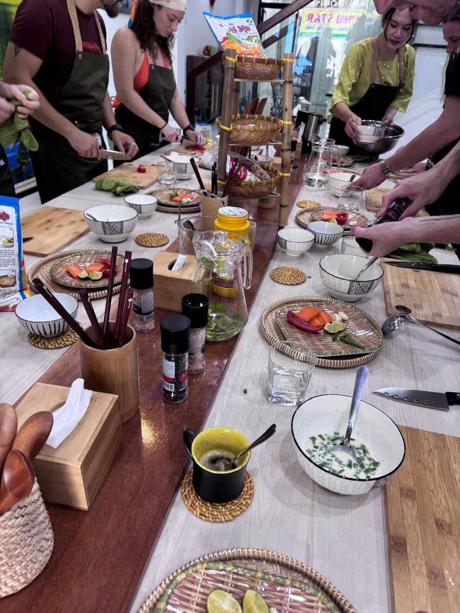

Grey skies over the Hàn River don't have to ruin your trip. Da Nang has a real rainy season — roughly September through December, with October and November bringing the heaviest downpours — and locals have been making the most of it for generations. Here are 15 indoor and covered activities that are just as good, rain or shine.
Quick answer: the best things to do in Da Nang when it rains are a hands-on Vietnamese cooking class, the Museum of Cham Sculpture, the Marble Mountains caves, Chợ Cồn market, Vincom Plaza (mall, cinema, ice rink), a spa treatment, and an evening of karaoke, billiards or an escape room — all entirely indoors or under cover.
The Quick List
Hands-On Cooking Class
Market tour under cover, then cook 6 dishes indoors in a local home. Warm, hands-on, 100% rain-proof.
Museum of Cham Sculpture
The world's largest collection of Cham artefacts, a short walk from the Dragon Bridge.
Đà Nẵng Museum
Housed in an old French colonial fort, covering the city's more recent history — perfect for a quiet rainy morning.
Marble Mountains Caves
Explore ancient caves, tunnels and pagodas carved into five marble-and-limestone hills.
Chợ Cồn (Con Market)
Da Nang's biggest indoor market — produce, coffee, clothes and hot street food under one roof.
Vincom Plaza
Indoor mall with a CGV cinema, an ice-skating rink, an arcade and a food court — a full afternoon under one roof.
Spa & Massage
A rainy afternoon is the perfect excuse for a traditional Vietnamese massage or foot reflexology.
Indoor Climbing Gym
Colourful bouldering walls for all levels — great for families with energy to burn.
Create Art Space
Painting, soap-making and mosaic workshops in a cosy studio — easy and fun for any skill level.
Mikazuki Water Park
Heated Japanese-style onsen baths alongside covered water slides — works surprisingly well in the rain.
Escape Room
Solve puzzles against the clock at a themed escape room like Locked Danang — great for groups and families.
Karaoke Lounge
A Vietnamese rainy-night classic — rent a private room with friends and sing the evening away.
Billiards Hall
A relaxed, inexpensive evening out — pool tables are easy to find in nearly every neighbourhood.
Dragon Bridge Fire Show
Watch the dragon breathe fire and water from a covered riverside café — Friday, Saturday and Sunday at 9pm.
Phin Coffee & People-Watching
Grab a window seat, order a cà phê sữa đá, and watch the city slow down under the rain.
Why a Cooking Class Is the Perfect Rainy-Day Activity
Of everything on this list, a hands-on cooking class is the one activity that turns bad weather into an advantage rather than a compromise. You're not waiting out the rain in a hotel room or rushing between covered spots — you're warm, busy, and fully absorbed in something hands-on for a few hours, which is exactly what a long rainy afternoon calls for.
At Family Kitchen Da Nang, the experience starts with a short visit to the local neighbourhood market, where the stalls are covered and the produce stays dry regardless of the weather outside. From there, everything happens indoors, in Jérôme and Julia's own home — a Franco-Vietnamese couple of former professional chefs who've turned their kitchen into a warm, welcoming classroom for up to 8 guests at a time.
"Rain doesn't cancel a cooking class — if anything, it makes the kitchen feel even cosier."
Over three hours, you'll cook 6 traditional Vietnamese dishes from scratch — Vietnamese egg coffee, fresh spring rolls, a herb-packed salad, crispy bánh xèo, a seasonal soup, and a surprise dessert — then sit down together to eat everything you made. No umbrella required, no plans to cancel, and a recipe booklet to take home so the rainy-day memory lasts well beyond the trip.

Dive Into History: Museums & Temples
The Museum of Cham Sculpture, right in the city centre near the Dragon Bridge, holds the world's most important collection of Cham art — sandstone carvings and statues spanning more than a thousand years of the Cham Kingdom. It's compact enough to see properly in an hour, entirely indoors, and a short taxi ride from almost anywhere in Da Nang.
The Đà Nẵng Museum, housed in the old French colonial Hải Châu fort building, covers the city's more recent history, including the American War period, and pairs well with a quiet, reflective rainy morning.
Go Underground: The Marble Mountains
Five marble and limestone hills rise just south of the city, each named after one of the five elements. Inside, a network of caves, tunnels and hidden pagodas make for one of the most atmospheric rainy-day outings in the area — the rain barely reaches you underground, and the mist rolling over the hills outside only adds to the mood. Wear shoes with good grip; some of the cave steps get slippery.
Shop and Eat Under One Roof
Chợ Cồn, Da Nang's largest indoor market, is a maze of covered lanes selling everything from fresh produce and roasted coffee beans to clothing and household goods. It's also one of the best places in the city to eat: tucked between the stalls are dozens of hot-food vendors serving bánh xèo, bún chả cá and other local specialities for a couple of dollars a bowl.
Slow Down: Spas & Wellness
Da Nang has no shortage of spas built around natural materials and quiet, unhurried service. A traditional Vietnamese massage, a facial, or simple foot reflexology is an easy way to turn a washed-out afternoon into one of the most relaxing parts of the whole trip — and prices are a fraction of what the same treatment costs back home.
Active Indoor Fun for Families
If the kids (or you) need to burn off energy, the Da Nang Climbing Gym has colour-coded bouldering walls for every level, while Mikazuki Water Park combines a Japanese-style onsen bathing complex with covered water slides — unusually, one of the few water parks in Vietnam that genuinely works even when it's raining, since much of it is designed to be enjoyed in the water anyway.
Get Creative
Create Art Space runs drop-in workshops — canvas painting, soap-making, mosaic coasters — in a relaxed studio setting. No experience needed, and it's a nice low-key alternative if you'd rather make something with your hands than sightsee in the rain.
One Roof, Everything: Vincom Plaza
When you want shopping, a cinema and dinner without stepping outside even once, Vincom Plaza on Ngô Quyền Street delivers all three. The four-floor mall has a CGV cinema for catching the latest releases, an ice-skating rink — a genuine novelty in tropical Da Nang — a TiniWorld arcade for younger travellers, and a top-floor food court covering Vietnamese, Korean, Thai and Western cuisine.
Evening Options: Games, Karaoke and a Fire Show
Once the sun goes down and the rain is still falling, Da Nang's evening scene moves almost entirely indoors. Try a themed escape room — Locked Danang is a local favourite, with rooms ranging from ancient curses to supernatural mysteries. For something more low-key, rent a private karaoke room with friends, Vietnam's favourite rainy-night pastime, or settle in for a few frames at a local billiards hall, open late and found in nearly every neighbourhood.
And if the rain clears even briefly on a Friday, Saturday or Sunday night, head to the riverside for the Dragon Bridge fire show at 9pm — watch the dragon breathe fire and spray water over the Hàn River from the dry comfort of a covered riverside café.
Frequently Asked Questions
Does it rain a lot in Da Nang?
Da Nang has a distinct rainy season, roughly from September to December, with October and November being the wettest months. Outside that window, rain is usually brief and tropical — short, heavy showers followed by sunshine.
Is Da Nang worth visiting during the rainy season?
Yes. Hotel and flight prices drop, the city is far less crowded, and there is no shortage of excellent indoor and covered activities — from cooking classes to museums, caves, markets and spas — to fill a rainy day.
What is the best rainy-day activity in Da Nang?
A hands-on Vietnamese cooking class is one of the best rainy-day activities in Da Nang: it's entirely indoors, hands-on, and gives you a genuine taste of local culture regardless of the weather outside.
Does the Family Kitchen Da Nang cooking class run even if it's raining?
Yes, every class runs rain or shine. The market visit takes place under the market's covered stalls, and the cooking itself happens entirely indoors in Jérôme and Julia's home, so rain never affects the experience.
Turn a Rainy Day Into the Best Day of Your Trip
Join Jérôme & Julia for a warm, hands-on Vietnamese cooking class in their Da Nang home — rain or shine, every single day.
Book a Cooking Class — $35/person